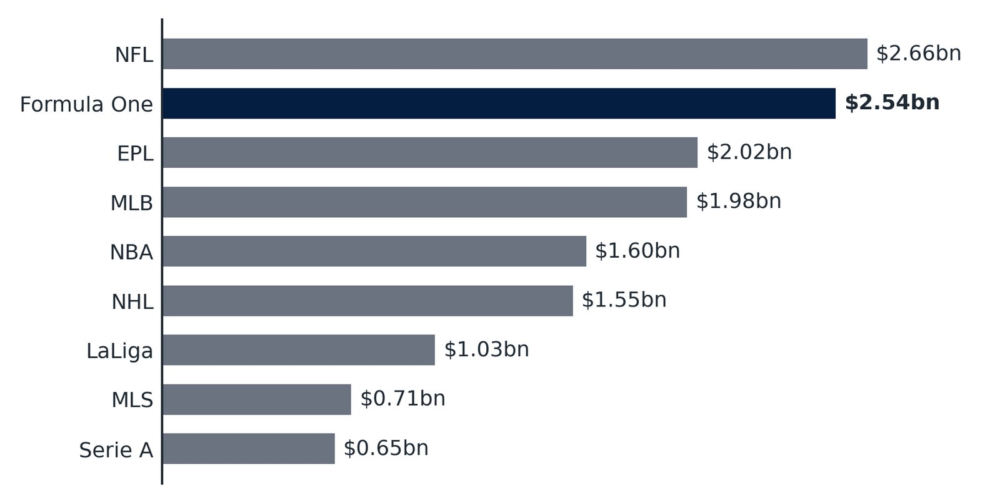
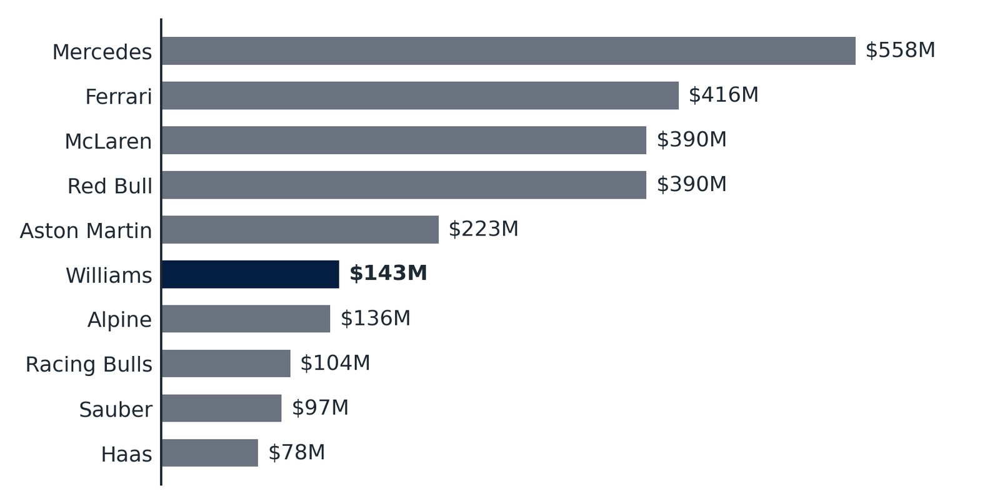
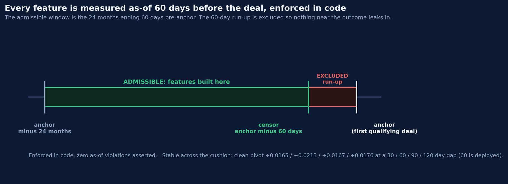
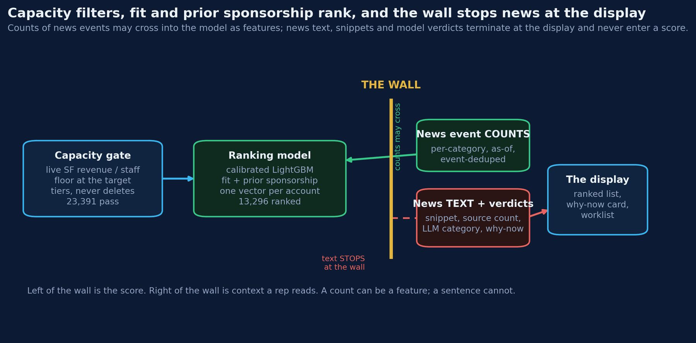
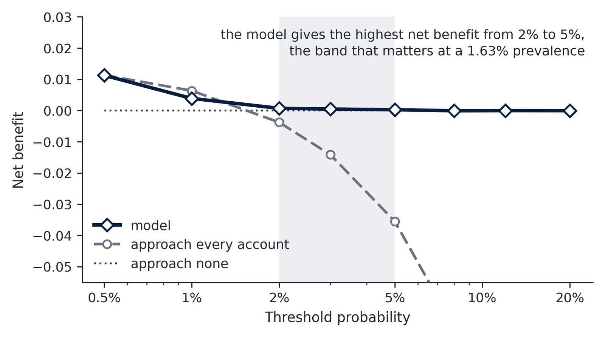
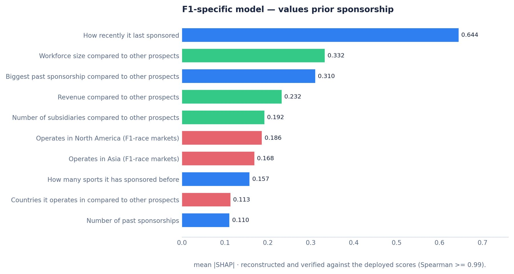
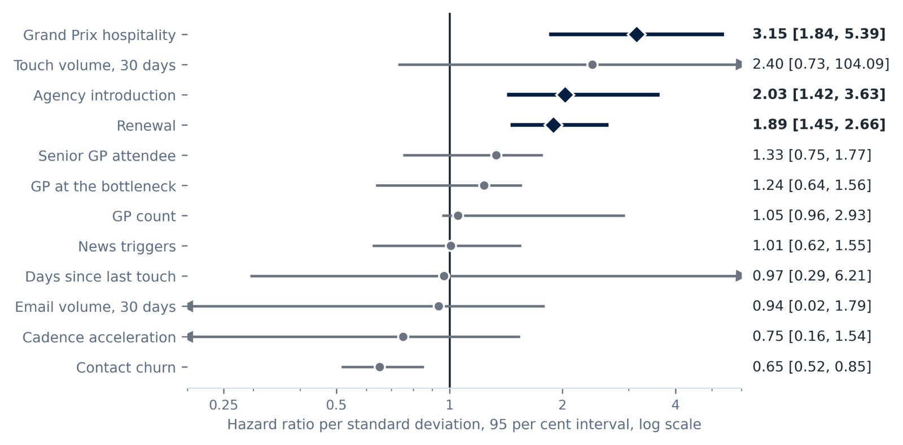
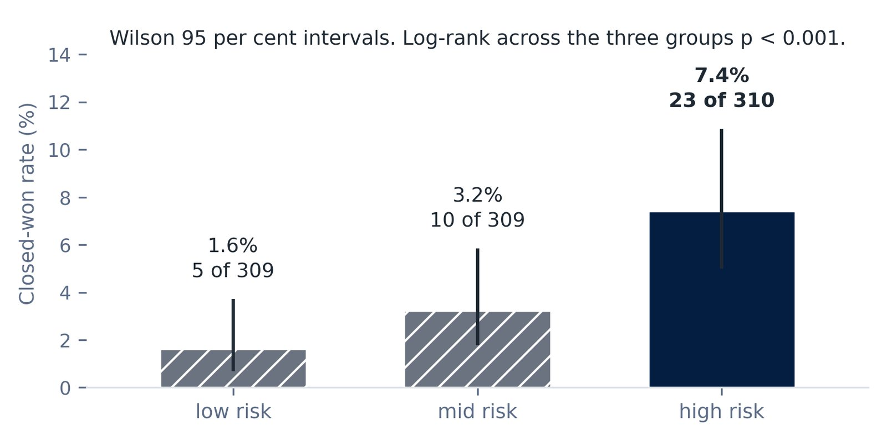
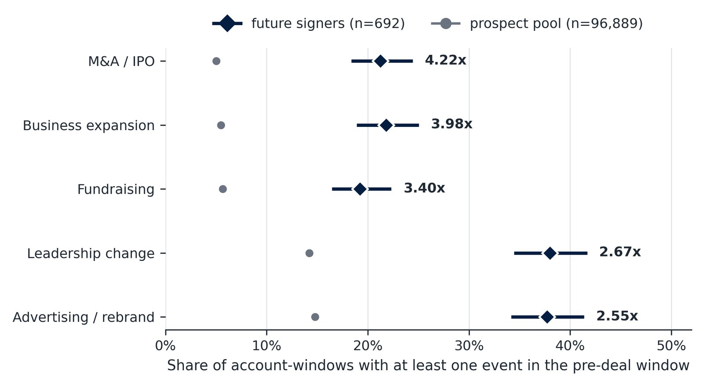
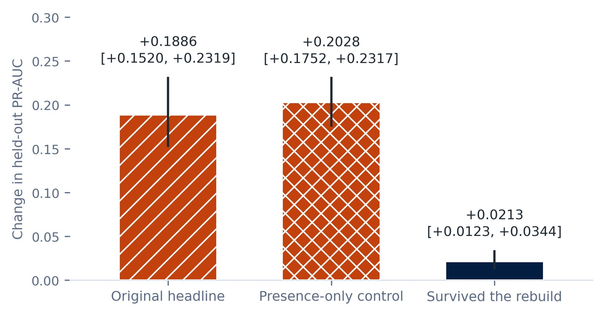

Where should the next hour of selling go?
A sponsorship-propensity system for Williams' commercial team: a weekly refreshed list of 60 ranked companies inside Salesforce, each carrying the evidence behind its rank, plus a model of which open deals will close.
Problem
Sponsorship is Williams' most stable revenue stream. From 2022 to mid-2026 only 38 of 926 opportunities signed, a closure rate of 4.1 per cent, so where a small team's next hour of selling goes matters.
In review the commercial team restated the target as a floor: £5 million a year and above, not a band capped at £10 million.
Skills
- Weak supervision: 343,813 cross-sport deals as labels; Williams' outcomes held back for validation
- Leakage control: every feature as-of 60 days pre-deal, asserted in code; forward-time validation
- News pipeline: GDELT v2 via BigQuery, 60.8M matched rows, LLM classification on the Batch API
- Ranking model: calibrated LightGBM with SHAP evidence cards
- Survival analysis: discrete-time hazard model on 926 opportunities
- Deployment: weekly Salesforce writeback, frozen model, $0.26 per refresh
Results
The market


Finding future sponsors
Labels came from the wider market, not Williams' pipeline, so the model learns capacity rather than past preferences. A sales rep reviewing the tool before a call block flagged top-ten names that failed face validity, one a defunct company, and a news box polluted with junk. Fixes followed: a check for dead or merged accounts, junk categories filtered, and cards carrying deal value, owner, last activity and a live Salesforce link.




Closing the deal
A second model estimates each open opportunity's monthly closure probability, controlling for representative identity. Renewals and warm agency introductions roughly double it; Grand Prix hospitality points the same way on 13 exposed deals, too few to quantify. Asked why a page said 42 per cent when the team wins about 3, every win rate gained its denominator: 88 of 210 that reached proposal, 47 of 1,009 tracked.


The news feature was removed, and why
News volume was removed from the deployed model: it does not predict signing, and the early headline lift was almost entirely a coverage artefact. The team asked for pre-engagement news in the closing model too; built, it returned a null.


What a label would do with this
The ranking would order brands and partners worth pitching a sync or partnership to, from public signals as-of the pitch date. The hazard model would estimate which release campaigns in flight are likely to convert, and which listeners are on a superfan trajectory, with the same stated denominators.
The tool, with fictional data
A working copy of the weekly page. Every company, person, headline, score and deal below is invented; the layout and behaviour are the real thing. Click a company for its dossier, switch lenses, filter the worklist.